| National Flag |
Flag of India |
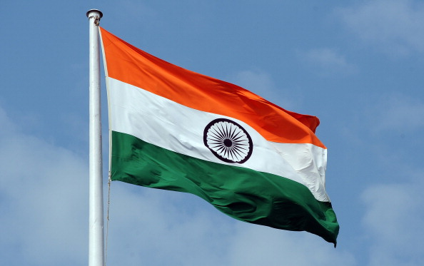 |
A horizontal rectangular tricolour with equally sized deep saffron at the top, white in the middle and India green at the bottom. In the center is a navy blue wheel with twenty-four spokes, known as the Ashoka Chakra. The flag is based on the Swaraj flag designed by Pingali Venkayya. |
| National Emblem |
National Emblem of India |
|
An adaptation of Lion Capital of Asoka at Sarnath was adopted as the National Emblem of India on 26 January 1950, the day India became a republic. Forming an integral part of the emblem is the motto inscribed below the abacus in Devanagari script: "Satyameva jayate" (English: Truth Alone Triumphs), a quote taken from Mundaka Upanishad, the concluding part of the sacred Hindu Vedas. |
| National Calendar |
Saka Calendar |
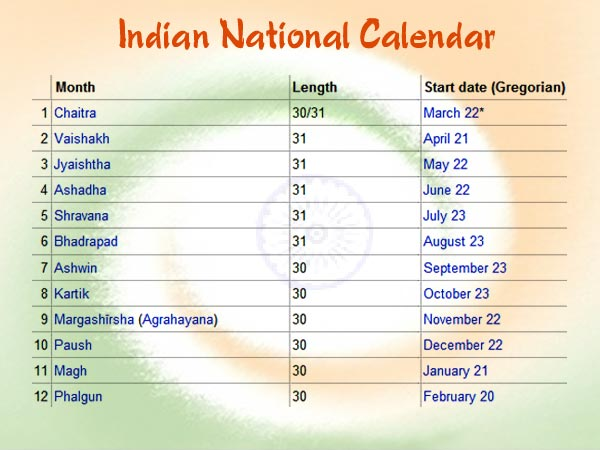 |
Saka calendar was introduced by the Calendar Committee in 1957, as part of the Indian Ephemeris and Nautical Almanac, which also contained other astronomical data, as well as timings and formula for preparing Hindu religious calendars. Usage officially started at 1 Chaitra 1879 Saka Era, or 22 March 1957. |
| National Anthem |
Jana Gana Mana |
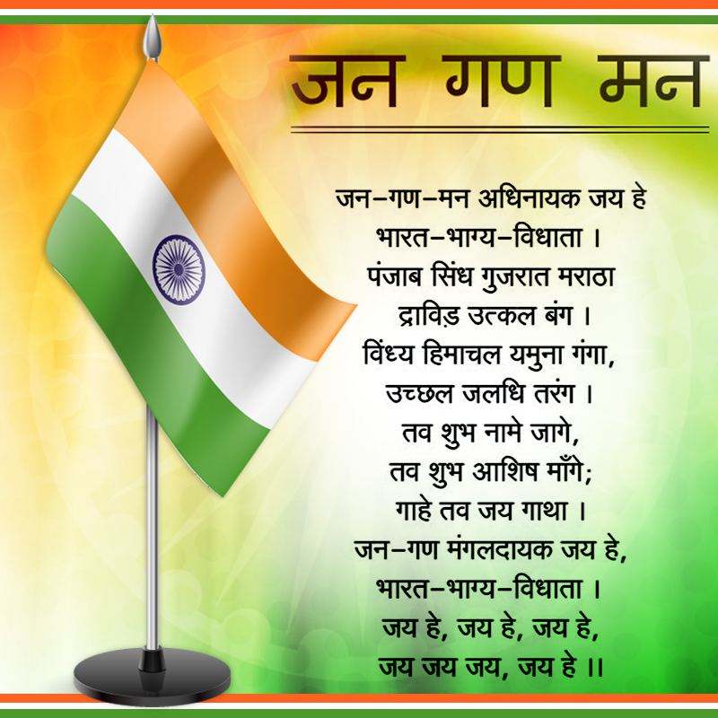 |
Jana Gana Mana by Rabindranath Tagore was officially adopted by the Constituent Assembly as the Indian national anthem on 24 January 1950 |
| National Song |
Vande Mataram |
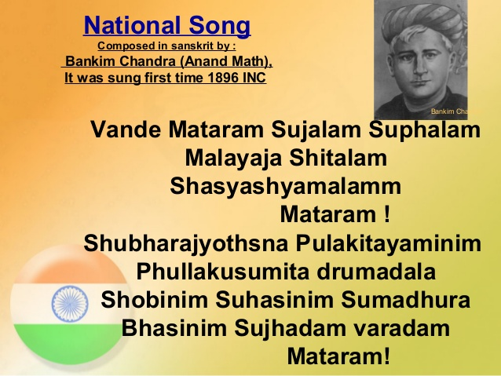 |
The first two verses of Vande Mataram by Bankim Chandra Chatterjee was adopted as the National song of India in 1950. "Vande Mataram" was sung during the 1896 session of the Indian National Congress by Rabindranath Tagore. |
| Oath of Allegiance |
National Pledge |
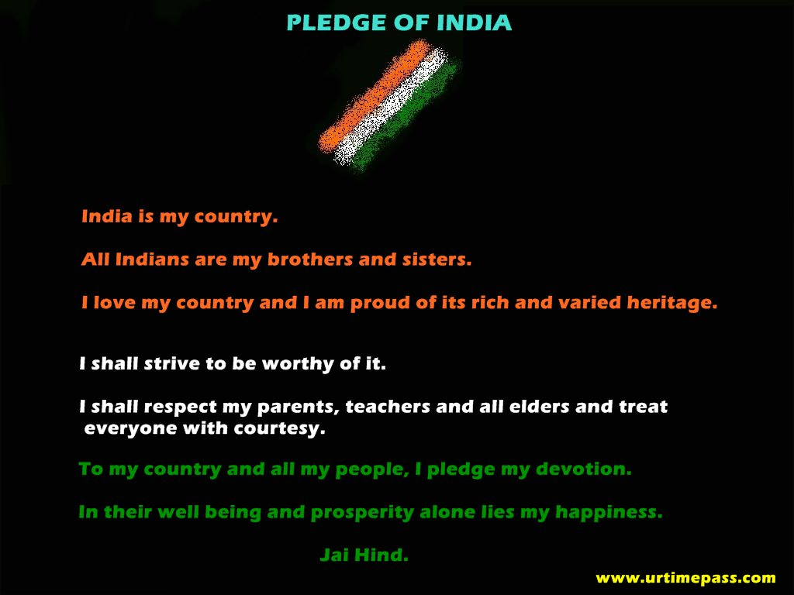 |
It was written in Telugu by Pydimarri Venkata Subba Rao in 1962. Central Advisory Board on Education directed that the pledge to be sung in Schools and that this practice to be introduced by 26 January 1965. |
| National Flower |
Indian lotus |
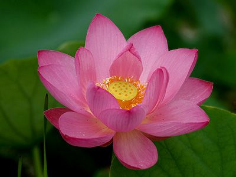 |
Lotus (Nelumbo nucifera) is a sacred flower and occupies a unique position in the art and mythology of ancient India and has been an auspicious symbol of Indian culture. |
| National Fruit |
Mango |
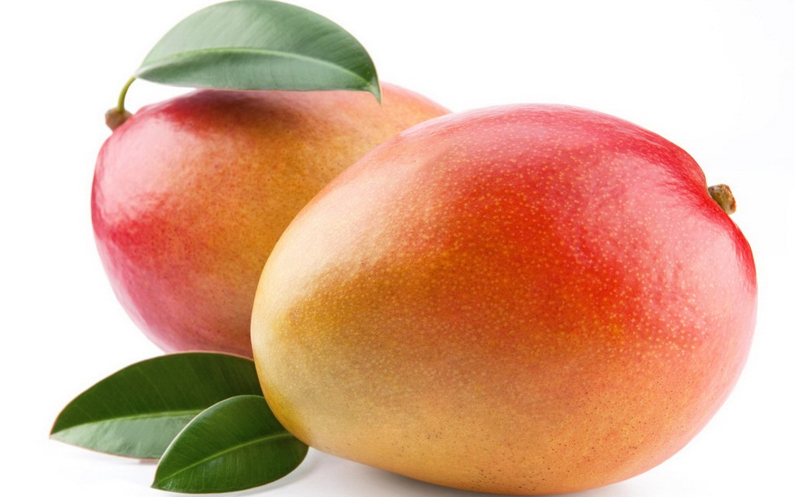 |
Mango (Mangifera indica) originated in India and the country is home to more than 100 varieties of the fruit. |
| National River |
Ganga |
|
Ganga is the longest river of India with the most heavily populated river basin in the world. The river is revered by Hindus as the most sacred river on earth. |
| National Tree |
Indian Banyan |
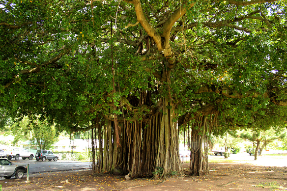 |
Indian banyan (Ficus bengalensis) root themselves to form new trees and grow over large areas. Because of this characteristic and its longevity, this tree is considered immortal and is an integral part of the myths and legends of India. |
| National Animal |
Royal Bengal Tiger |
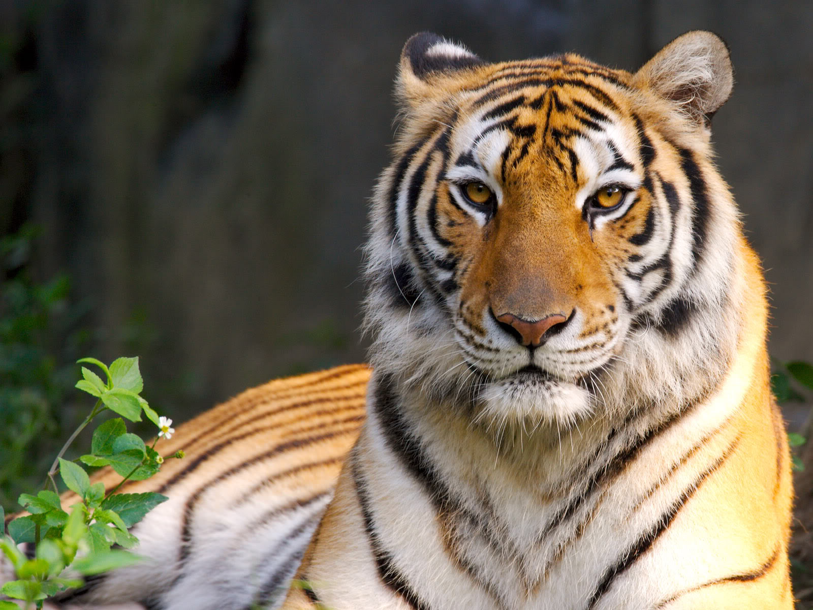 |
Bengal tiger (Panthera tigris tigris), the largest carnivore is found only in the Indian subcontinent and can be found in most regions of the country. |
| National Aquatic Animal |
River Dolphin |
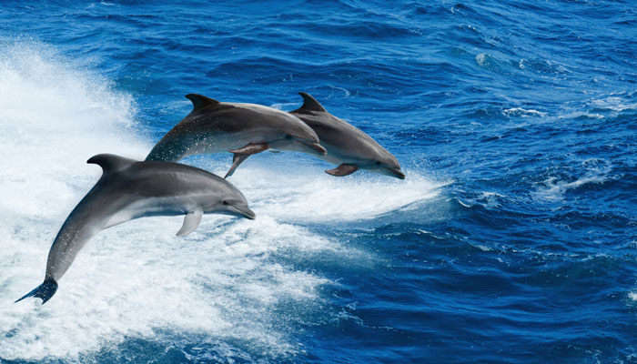 |
Gangetic dolphin (Platanista gangetica) is said to represent the purity of the holy Ganga River as it can only survive in pure and fresh water. |
| National Bird |
Indian peacock |
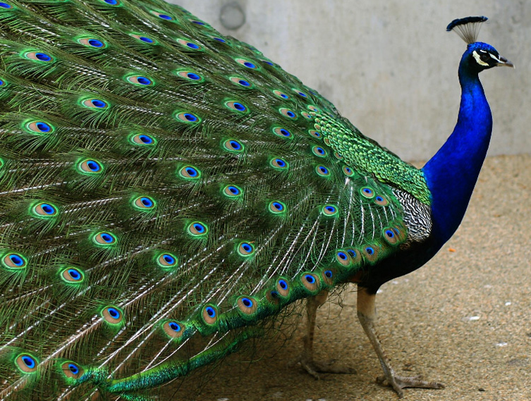 |
Indian peacock (Pavo cristatus) is designated as the national bird of India. A bird indigenous to the subcontinent, peacock represents the unity of vivid colours and finds references in Indian culture. |
| National Game |
Hockey |
|
In spite of cricket’s huge popularity in India, hockey is still the national game of India. Hockey when declared as the national game was very popular. The game has seen a golden era during 1928-1956, when India won 6 consecutive gold medals in the Olympics. Hockey was considered as the national game because of its unmatched distinction and incomparable talent at the time. At that time India had played 24 Olympic matches and won all of them. |
| National currency |
Indian Rupee |
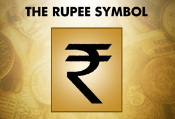 |
Indian Rupee (ISO code: INR) is the official currency of the Republic of India. The issuance of the currency is controlled by the Reserve Bank of India. The Indian rupee symbol is derived from the Devanagari consonant "र" (ra) and the Latin letter "R" was adopted in 2010. |